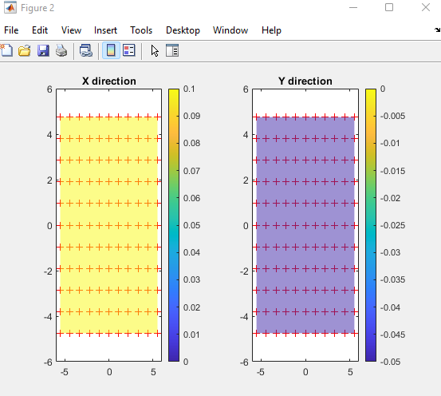
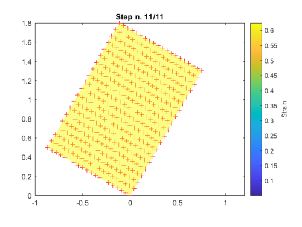

StrainCalculator calculates strains from a displacement field. One way to
use it, is to virtually generate a grid and the position of each grid element at
each time step. In this example we will do just that, and then we will
let StrainCalculator compute displacements and
strains, and we will compare the strains to known values.
Let’s first create the object, and a simple grid:
% Create objectobj=StrainCalculator();% Generate grid[X0,Y0]=meshgrid(0:10,0:10);% Center grid for convenienceX0=X0-5;Y0=Y0-5;% Plotplot(X0(:),Y0(:),'b.')
The grid spacing is 1 both in the horizontal and vertical direction. This
will be automatically computed by StrainCalculator, as it assumes an
homogeneous grid.
Now we have to stretch the grid. Let’s simulate a tension test in the
horizontal direction , from rest to 10% strain (as engineering strain)
in 10 loading steps.
% Store grid elements position at each stepX=cell(11,1);Y=cell(11,1);max_step=10;% Notice that *step* starts from zero to store the resting stepforstep=0:max_stepcurrent_strain=0.1*step/max_step;X{step+1}=X0+X0.*current_strain;Y{step+1}=Y0-Y0.*current_strain.*0.5;% Assume Poisson's ratio = -0.5;end% Plot final gridholdon;plot(X{end}(:),Y{end}(:),'r.')
We computed the position of each grid element at each step, so not we are
ready to calculate displacements and strains:
obj.calcStrain('Engineering')
Done! Now you can check that the final horizontal engineering strain. In
the final step, strain is 0.1 everywhere, as expected.
% Assert equality tolerance for round-off errorsassert(all(obj.strain.X{end}(:)-0.1<1e-7))
The script also includes the plot of all loading steps. At the end, you
should get something like this:

Last step of a tension test in the horizontal direction. Note that the
maximum horizontal engineering strain is 0.1, and the vertical one is
0.05 (Poisson’s ratio = -0.5).¶
This script uses StrainCalculator to compare differnt types of strain definition.
A fake data series is generated (using generateFakeData())
to obtain a uniform deformation field. The deformation field is computed using the different
methods available in calcStrain(). Finally, all loading steps and all
methods are plotted to be compared.
This script uses StrainCalculator to compare differnt types of strain definition.
A fake data series is generated (using generateFakeData())
to obtain a uniform horizontal tension field and a rigid rotation.
The Green deformation field is graphed at each step, while the average
strain over the whole surface is plotted at the end, to compare the
different computation methods.
The latter plot highlights how engineering strain is sensitive to
rotation: it increases and then decreases suggesting compression ,
although the sample still undergoes tension (but it is rotated).
Engineering strain and Almansi strain also show a “phantom” vertical
component of strain.

Last strain step, with the superimposition of a horizontal strain and
a 60° counterclockwise rotation¶